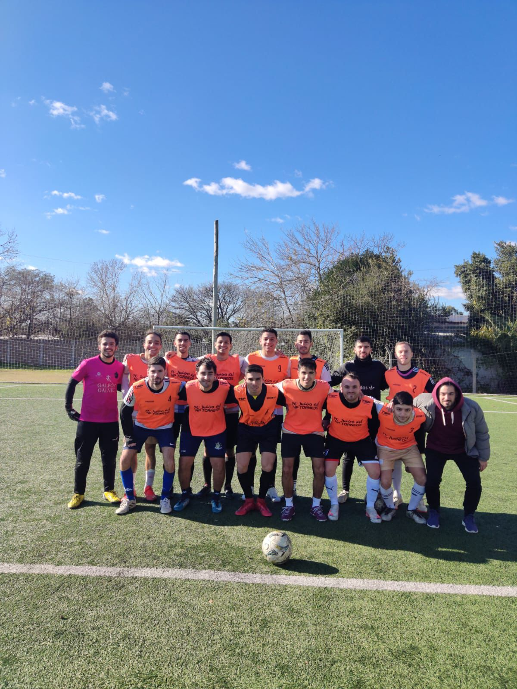

Luego de 1 año apartado de la competividad, el conjunto de
Coghlan vuelve a las canchas, este sabado a partir de las 19:40hs
Por Tomás Mussi
Delcarmen jugará en la 3ra División

El equipo oriundo de Coghlan fundado en 2016 vuelve a jugar un
torneo profesional luego de un año de inactividad. En sus inicios
por Tifa y luego asentandose en Liga Nuñez
luego de varias discusiones el equipo logro obtener una vacante en
la liga mas competitiva de CABA, obteniendo un lugar en la 3era
division.
Un 'Delca' renovado, con nuevas incorporaciones pero manteniendo
la base, los pilares del equipo, los fundadores.
La ilusión más intacta que nunca, torneo de 12 fechas y obviamente
el equipo quiere ser protagonista y por que no lograr el objetivo
tan ansiado por todos, el título.